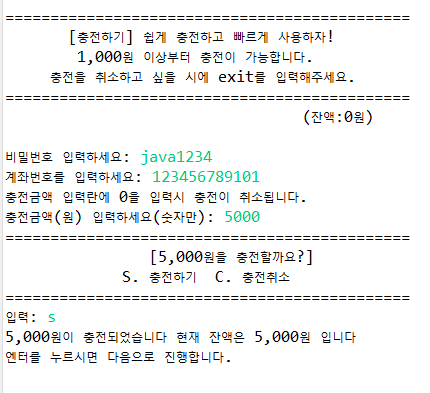

#1. 프로젝트 정보
| 프로젝트명 |
🍆마켓🍆 : 중고 거래 프로그램 |
|---|---|
| 프로젝트 진행기간 | 2021. 04. 30 ~ 2021. 05. 11 |
| 프로젝트 개요 |
중고 거래 사이트를 이용하여 사용자들이 안전하고
편리하게 거래를 할 수 있도록 제작한 프로그램 |
| 프로젝트 목적 |
1. 회원 전용으로 이용할 수 있게 프로그램을 구성하여
중고 거래에 대한 불안감을 해소하고 안전한 거래를
진행할 수 있도록 함. 2. 구매자와 판매자 사이의 신뢰성 있는 중고거래를 진행하기 위해 안전거래 기능을 도입. 3. 다양한 이벤트를 통해 중고거래뿐만 아니라 사이트에 접속하는 것 만으로도 즐겁고 재밌는 기능을 선사하여 고객의 방문수와 만족도를 증대. |
| 참여인원 | 5명 |
| 담당업무 | 회원 가입, 로그인, 광고, 공지사항, 안전거래 서비스 구현 |
#2. 사용 기술
| 개발환경 | Windows10 |
|---|---|
| 개발 툴 | Eclipse |
| 사용 기술 | BufferedReader, BufferedWriter, ArrayList, 메소드 오버로딩, 메소드 오버라이딩, Random Class, Math Class, Calendar Class |
#3. 구현화면
1. 초기화면
| 🍆마켓🍆의 로고와 함께 광고를 확인할 수 있습니다.
초기화면에서는 회원가입, 로그인, 아이디찾기, 비밀번호 찾기, 프로그램종료 등의 메뉴로 이동이 가능합니다.
| 🍆마켓🍆의 로고와 함께 광고를 확인할 수 있습니다.
초기화면에서는 회원가입, 로그인, 아이디찾기, 비밀번호 찾기, 프로그램종료 등의 메뉴로 이동이 가능합니다.
2. 회원가입
| 1번을 입력해 회원가입 페이지로 접근합니다.
회원가입 절차는 이름, 아이디, 비밀번호, 닉네임, 성별, 휴대폰번호, 계좌번호, 보험가입여부 등을 입력해야 하도록 구현하였습니다.
또한, 닉네임은 한글 4글자로 입력해야 가입이 가능하도록, 휴대폰번호와 계좌번호는 숫자만 입력하도록 구현하였습니다.
모든 정보가 입력 된 후, 확인 차 가입진행 여부를 묻고 진행하도록 구현하였습니다.
| 1번을 입력해 회원가입 페이지로 접근합니다.
회원가입 절차는 이름, 아이디, 비밀번호, 닉네임, 성별, 휴대폰번호, 계좌번호, 보험가입여부 등을 입력해야 하도록 구현하였습니다.
또한, 닉네임은 한글 4글자로 입력해야 가입이 가능하도록, 휴대폰번호와 계좌번호는 숫자만 입력하도록 구현하였습니다.
모든 정보가 입력 된 후, 확인 차 가입진행 여부를 묻고 진행하도록 구현하였습니다.
3. 로그인
| 메인화면에서 2번을 눌러 로그인 화면으로 이동이 가능합니다.
가입시 입력했던 아이디와 비밀번호를 입력하여 로그인 진행이 가능하도록 구현하였습니다.
| 메인화면에서 2번을 눌러 로그인 화면으로 이동이 가능합니다.
가입시 입력했던 아이디와 비밀번호를 입력하여 로그인 진행이 가능하도록 구현하였습니다.
4. 공지사항 페이지
| 메인화면에서 로그인 후, 6번 메뉴를 선택하면 공지사항 게시판 확인이 가능하도록 구현하였습니다.
| 메인화면에서 로그인 후, 6번 메뉴를 선택하면 공지사항 게시판 확인이 가능하도록 구현하였습니다.
1.
2.
5.1 마이페이지 - 충전하기
| 사용자는 마이페이지 메뉴에서 자신의 메뉴를 확인 할 수 있도록 구현하였습니다.
또한 4번 메뉴에서 안전거래를 위하여 금액을 충전하고 출금할 수 있도록 구현하였습니다.
| 사용자는 마이페이지 메뉴에서 자신의 메뉴를 확인 할 수 있도록 구현하였습니다.
또한 4번 메뉴에서 안전거래를 위하여 금액을 충전하고 출금할 수 있도록 구현하였습니다.
1.
2.
3.
금액을 충전하고자 할 때에는 비밀번호를 입력하여야 하도록 구현했습니다.
금액을 충전하고자 할 때에는 비밀번호를 입력하여야 하도록 구현했습니다.

4.
충전시, 계좌번호와 충전 금액을 입력하면 충전여부를 재 확인하는 창을 확인할 수 있습니다.
사용자가 잘못 충전했을 시를 대비해서 만들었습니다.
충전금액은 거래의 편의성에 맞추어 1,000원이상 충전이 가능하도록 구현하였습니다.
잔액 또한 확인이 바로 가능합니다.

충전시, 계좌번호와 충전 금액을 입력하면 충전여부를 재 확인하는 창을 확인할 수 있습니다.
사용자가 잘못 충전했을 시를 대비해서 만들었습니다.
충전금액은 거래의 편의성에 맞추어 1,000원이상 충전이 가능하도록 구현하였습니다.
잔액 또한 확인이 바로 가능합니다.
5.2 마이페이지 - 출금하기
| 사용자가 원하는 때에 출금할 수 있도록 구현하였습니다.
| 사용자가 원하는 때에 출금할 수 있도록 구현하였습니다.
1.
출금시에는 사용자 편의성을 고려해, 잔액이 얼마 있는지 알려주는 부분을 구현했습니다.
또한 계좌 출금시에도 비밀번호, 계좌번호 출금금액을 입력하고 재확인하는 과정을 거쳤습니다.
출금시에는 사용자 편의성을 고려해, 잔액이 얼마 있는지 알려주는 부분을 구현했습니다.
또한 계좌 출금시에도 비밀번호, 계좌번호 출금금액을 입력하고 재확인하는 과정을 거쳤습니다.